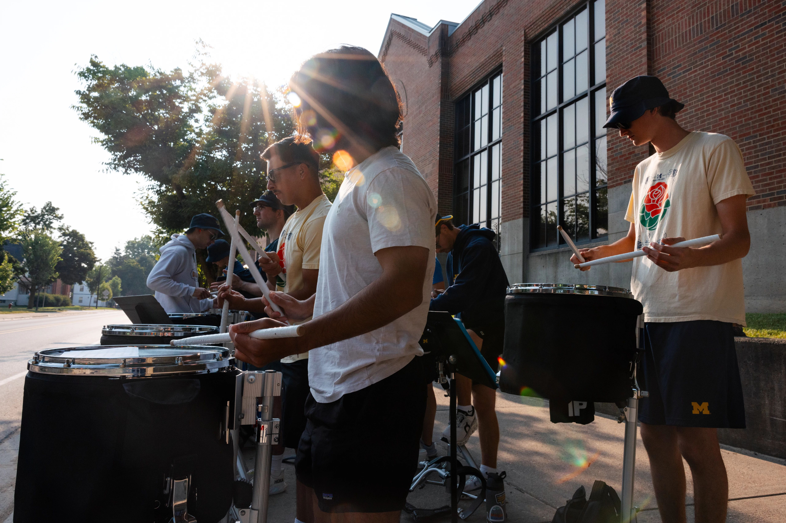

Both the University of Michigan and the local Ann Arbor community host a wide variety of events and activities for people of all ages and interests through the year. Check out some popular activities below:
U-M Student Life Events Calendar
Happening @ MichiganCultural Activites
- University Musical Society School of Music
- Theater
- Ann Arbor Symphony Orchestra
- Ann Arbor Annual Art Fair
UM Museums
- Museum of Natural History
- University of Michigan Museum of Art
- Museum of Zoology
- The Detroit Observatory
Restuarants in Ann Arbor
The city of Ann Arbor provides one of the widest ranges of diversity in the state of Michigan. Included in this unique diversity is one of the world’s oldest cultures, food. Restaurants in the Ann Arbor area, downtown and campus, are a hotbed for any type of food one can imagine. From the late night eats that South University provides, to the upscale dining experiences downtown, you're sure to find one restaurant in Ann Arbor that you can't live without (and remember fondly, after you graduate).
West End Grill